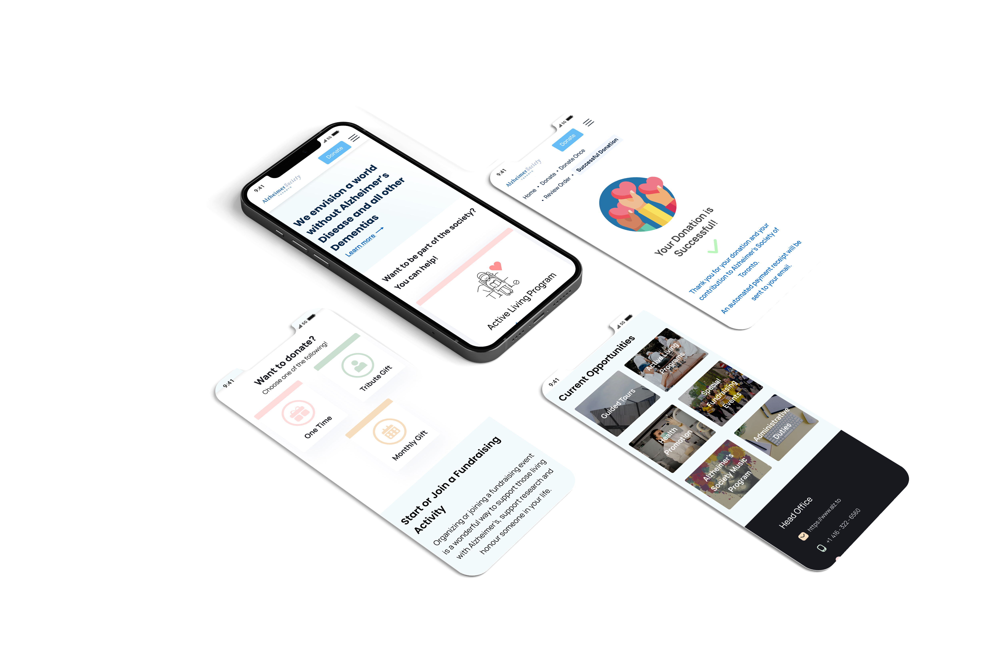
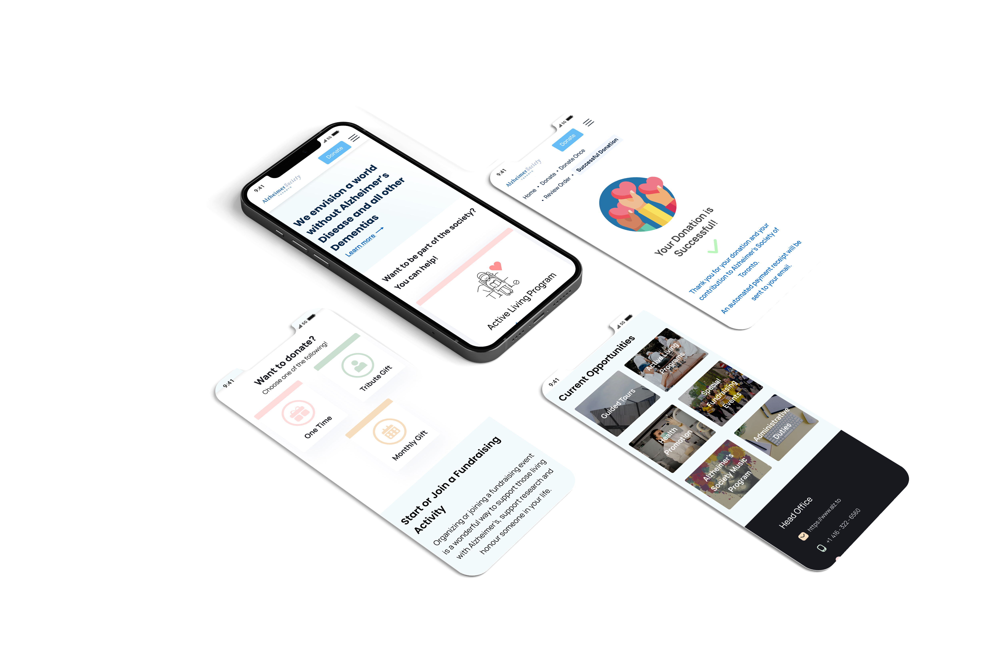

Toronto Alzheimer Society
Redesigning Toronto Alzheimer website to make it
more appealing for people to participate
by donating and volunteering

User Research
We created proto-persona then persona after our research process:
We assumed our character to be a caring female, who wants to deal with her mother who has Alzheimer.
She is organized and punctual, so that she needs well-organized website with specific schedules,
as she deals with her mother's case, she wants resources, which are easy to accessible and follow
We conducted 4 interviews with people who have dealt with relatives with dementia
or working with them
Interviews
We did 4 interviews with people who dealt before with relatives who have dementia or they work with them (Here are focus of some notes of each one )
My role:
I interviewed a girl who works in hospital and deals daily with people with Alzhiemer, which helps us in redisigning the website
Later, we worked on affinity diagram, empathy map, user insights, and features prioritization
Definition & Synthesis
Showing some parts of synthesis overview:
Here are our affinity diagram, empathy map and features prioritization.
Then you see the hearistic evaluation of the orginal website,
our team checked all the changes needed to improve it
My Role:
I worked with my team on all reaserch process,
then everyone dealt with the notes of interviews that she/he conducted
Ideation
Storyboard
On the left:
I created this storyboard to clarify the difference between the previous design
of the website compared to the design that we want to create
Brainstorming
On the Top:
This is our brainstormig to discuss ideas. here, I highlight
some ideas with the most votes
Card Sorting
On the bottom:
We asked people to do card sorting for us to find the best navighation way,
I clarify our last navigation based on this card sorting
User Flow
On the left:
This is our user flow that we worked as a team to accomplish
we did some changes to donation part
Site Map
On the right:
This is our site map according to the card sorting
that we did before
Prototypes
 

On the left:
Six Desktop Prototypes: Home Page, About, Donation,
volunteer, review, and Success
On the right:
Four Mobile Prototypes:
Home, donation, volunteer,
and success
User Usability and Outcomes
We conducted 5 usability tests on every stage and try to make some
tweaks according to the results that we got
We created wireframes for mobile and desktop, then we did mid-fidelity prototypes and high-fidelity as shown here
My role:
I worked on Low-fidelity, mid-fidelity prototypes and wireframes especially for donate page and some designs suggestions for homepage
Conclusion & Future Opportunities
Gallery of memories for people to help their minds and give them joy.
Adding virtual activities such as offering video chat with AD patients.
and giving away Equipments.